"Soal terakhir."
*Deg* *Deg*
"Diberikan sebuah bilangan N, gambarlah pohon faktornya."
(Dalam hati) "Wah gampang nih."
"Maaf soal diralat. Gambarlah semua pohon faktor berbeda dari N."
"Hah!?"
Begitulah situasi cerdas cermat tingkat kecamatan yang sedang Irwanto ikuti. Cara menggambar pohon faktor dari sebuah bilangan bulat M didefinisikan sebagai berikut:
Berikut adalah beberapa contoh dari pohon faktor:
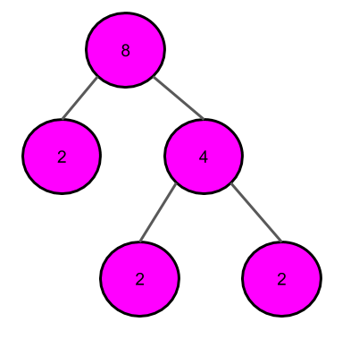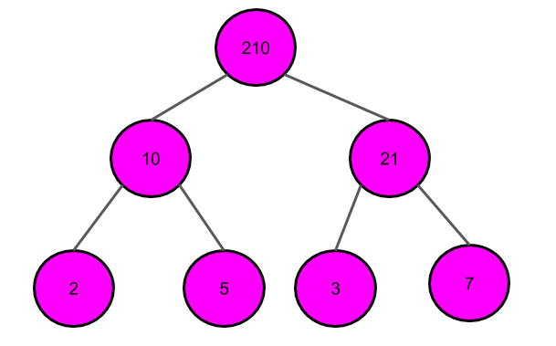
Berikut adalah beberapa pohon yang bukan merupakan pohon faktor:
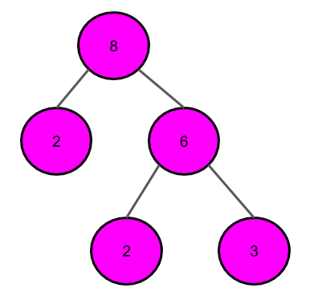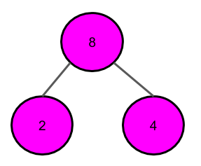
Pohon kiri salah karena 2*6 adalah 12, bukan 8. Pohon kanan salah karena 4 masih bisa difaktorkan menjadi 2*2.
Selanjutnya, dua gambar pohon faktor A dan B dinyatakan sama jika dan hanya jika terdapat pengubahan urutan cabang-cabang pada B sehingga A dan B menjadi persis sama. Sebagai contoh, dua pohon berikut dikatakan sama:
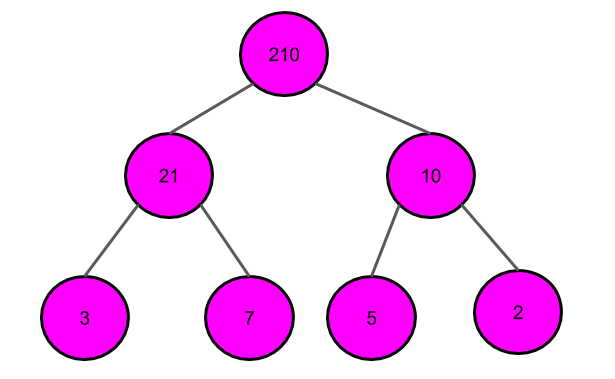
Berikut adalah salah satu cara mengubah pohon di kanan menjadi pohon di kiri:
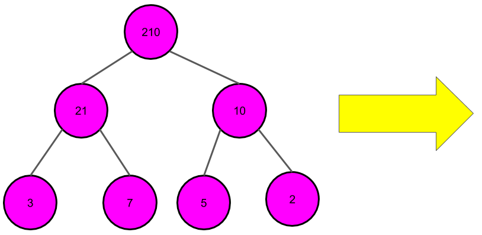
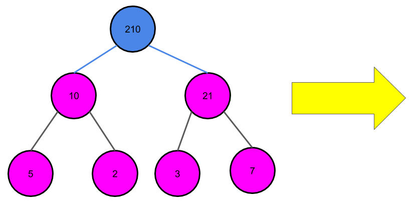
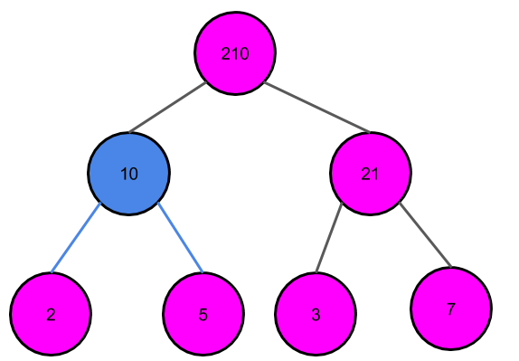
Percabangan yang urutan cabangnya ditukar ditandai dengan warna biru.
Irwanto merasa bahwa panitia sengaja membuat soal yang tidak mungkin diselesaikan dalam jeda waktu yang sangat singkat. Untuk itu, ia harus membuktikan bahwa banyaknya gambar pohon faktor berbeda cukup besar. Ia memberi kode pada Anda yang sedang menonton cerdas cermat tersebut untuk mencari banyaknya gambar pohon faktor berbeda yang mungkin. Karena Anda akan kesulitan untuk memberi jawaban utuhnya pada Irwanto, Anda memutuskan untuk memberikan banyaknya setelah dimodulo 109+7. Bantulah Irwanto!
Satu baris berisi sebuah bilangan bulat N, bilangan yang ingin diketahui banyak gambar pohon faktor berbedanya.
Satu baris berisi sebuah bilangan bulat, banyaknya gambar pohon faktor berbeda dari N setelah dimodulo 109+7.
8
1
30
3
420
60
Berikut adalah ketiga pohon faktor berbeda dari 30:
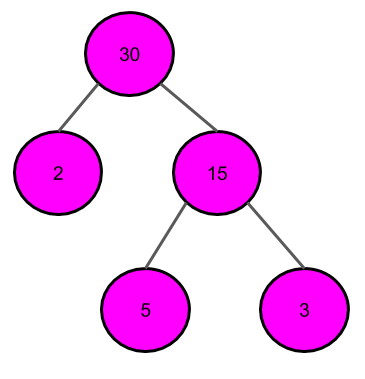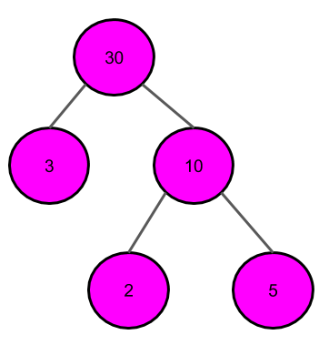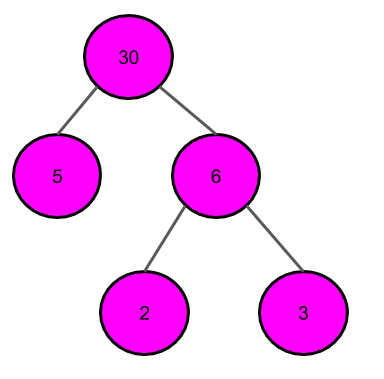